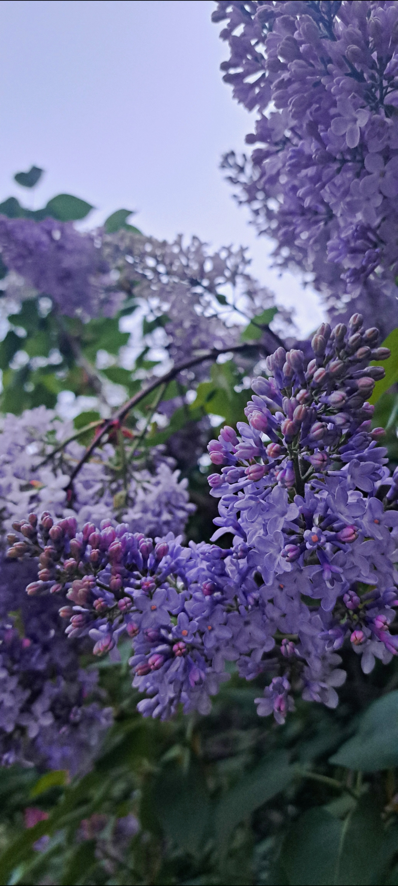

Zapraszamy do naszego przytulnego domku na wynajem, który oferuje komfortowe warunki dla
rodziny lub grupy przyjaciół.Ten uroczy domek o powierzchni 55 metrów kwadratowych zapewnia wszystko, czego
potrzebujesz podczas urlopu czy weekendowego wypoczynku.
Na parterze znajdują się dwa pokoje - sypialnia oraz salon. W sypialni znajdziesz wygodne
łóżko z możliwością aranżacji jako łóżko małżeńskie lub dwa pojedyncze łóżka, a także dwie jednoosobowe sofy, które
można wykorzystać do spania. W salonie znajduje się trzyosobowa rozkładana sofa, idealna na nocleg dla dodatkowych
osób. Dla komfortu gości przygotowaliśmy również kozę grzewczą, która zapewnia ciepłą i przytulną atmosferę podczas
chłodniejszych wieczorów. Salon jest również wyposażony w telewizor z dostępem do serwisów streamingowych, konsolę
Play Station 4 oraz biblioteczkę z książkami i grami planszowymi,zapewniając rozrywkę dla wszystkich. Duży, dębowy
stół w salonie
pomieści wygodnie 6 osób, idealny na wspólne posiłki czy wieczorne rozmowy przy
świecach.
Dodatkowym urokiem naszego domku jest oranżeria, która oferuje dodatkową przestrzeń do relaksu i
odpoczynku. To osobne pomieszczenie, które mimo braku bezpośredniego połączenia z domem, stanowi
idealne miejsce na chwilę wytchnienia przy otwartych oknach i widokach na otaczającą przyrodę. W
oranżerii również znajduje się możliwość spania dla maksymalnie 2 osób.
Domek posiada także w pełni wyposażoną kuchnię oraz łazienkę z prysznicem, co sprawia, że pobyt
będzie wygodny i bezproblemowy.
Na zewnątrz znajduje się urocze podwórko z altaną, kompletem wypoczynkowym oraz miejscem na ognisko i grill, idealne
na wspólne spotkania na świeżym powietrzu.
Dla miłośników natury i relaksu przygotowaliśmy także hamak, huśtawkę oraz domek na drzewie.

Podwórko jest pięknie zadrzewione i zakrzewione, co stanowi doskonałą przestrzeń do zabawy dla dzieci, a ogrodzenie zapewnia spokój i bezpieczeństwo.
Dla wygody naszych gości zapewniamy pościel, zestaw ręczników, podstawowe przyprawy kuchenne oraz drewno do kozy. Dodatkowo, domek jest wyposażony w Wi-Fi, abyś mógł pozostać w kontakcie ze światem.
Zapraszamy do spędzenia niezapomnianego czasu w naszym uroczym domku, gdzie czeka na Ciebie wiele atrakcji i możliwości relaksu!